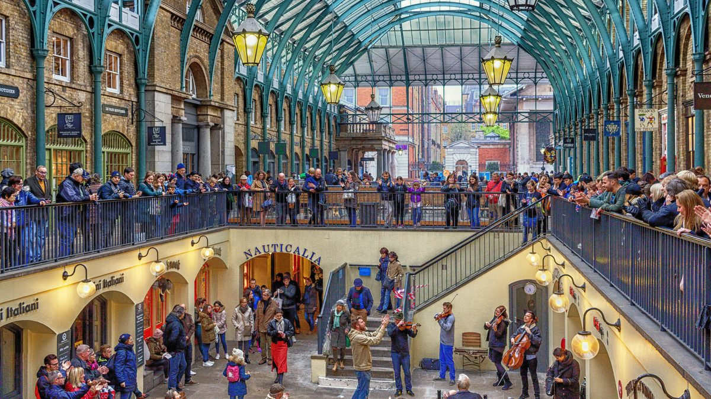
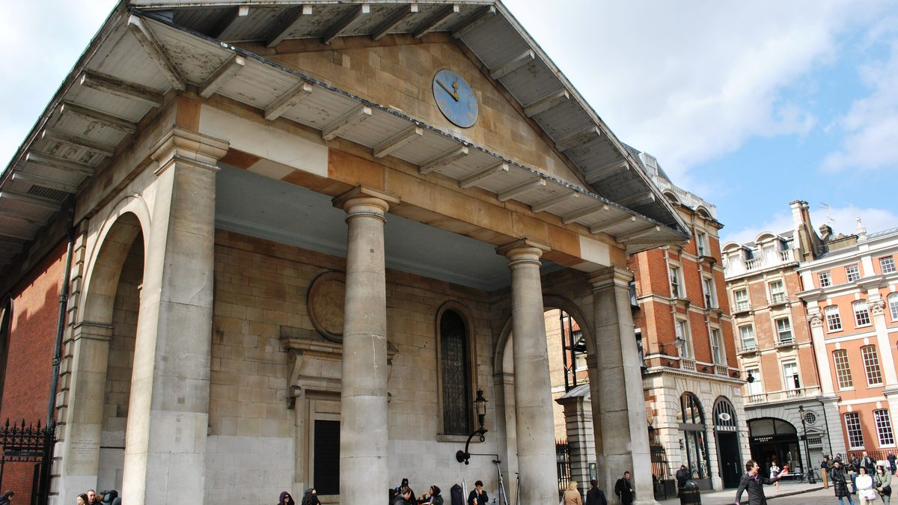
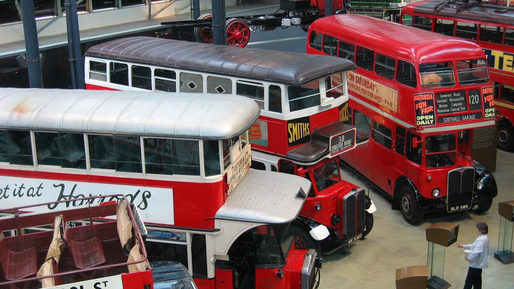
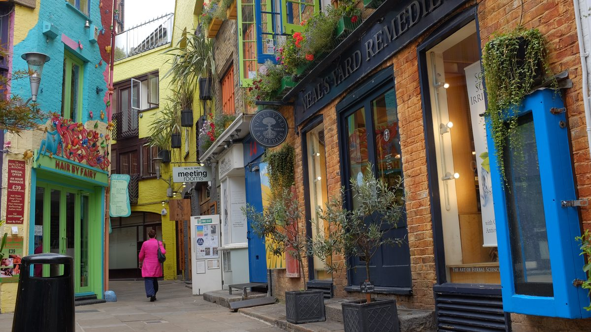
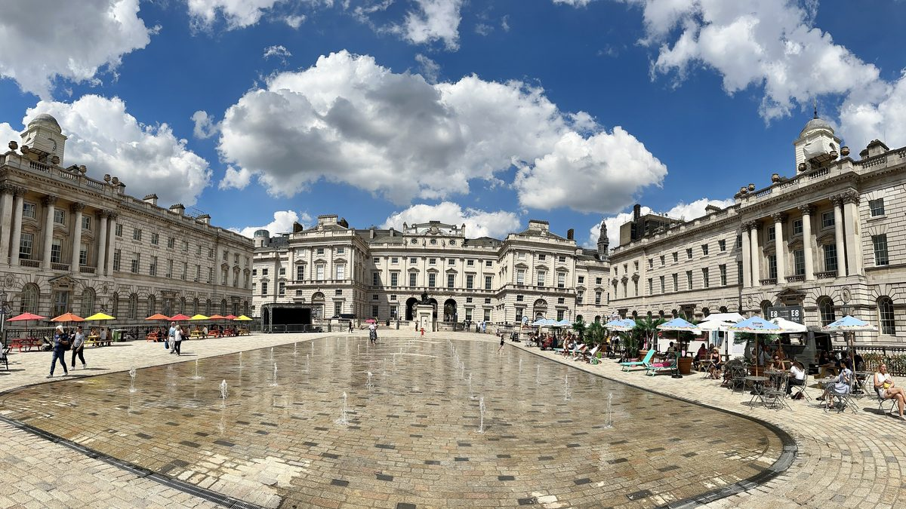

עודכן לאחרונה בספטמבר 2026
קובנט גארדן היא המקום שבו כמעט כל טיול ראשון בלונדון עובר, ובדרך כלל בטעות: יוצאים מהתחתית, רואים את השוק המקורה, עומדים עשר דקות מול להטוטן, וממשיכים. חבל, כי בתוך רדיוס של שלוש מאות מטרים סביב הכיכר יושבים שני שווקים שמתחלפים לפי היום, כנסייה עם גינה נסתרת, מוזיאון שילדים לא רוצים לצאת ממנו, בית אופרה שפותח את דלתותיו לכולם מהצהריים, וחצר קטנה שצבועה בכל צבעי הקשת. אין כאן כרטיסים שנגמרים ואין שעות פתיחה שצריך לרדוף אחריהן. יש רק סדר נכון ללכת בו, וזה בדיוק מה שהמדריך הזה נותן.
בחרו כיוון ותראו כאן את המקומות עצמם, עם מה שכדאי לדעת לפני שהולכים.
מה זה קובנט גארדן, ולמה זה המקום שבו לונדון מבדרת את עצמה

קובנט גארדן היא בעצם גן ירקות שהפך לכיכר. השם הוא שיבוש של Convent Garden, הגן של מנזר וסטמינסטר, שנמכר אחרי סגירת המנזרים לרוזני בדפורד. ב-1630 הזמין הרוזן הרביעי את האדריכל איניגו ג׳ונס לבנות על השטח כיכר בסגנון איטלקי, עם ארקדות, בתים אחידים וכנסייה בצד המערבי. זו הייתה הכיכר הציבורית הראשונה בלונדון, והאצולה שגרה בה ברחה ממנה כבר אחרי דור אחד, כי ב-1654 התיישבו במרכזה דוכני ירקות ופירות, ומהם צמח השוק הסיטונאי הגדול של העיר. אולם השוק המקורה, זה עם הגג המזוגג שכולם מצלמים, נבנה ב-1830 בשביל אותו שוק, ורק ב-1974 עברו סוחרי הירקות דרומה לניין אלמס, אחרי שהמשאיות כבר לא הצליחו להיכנס לסמטאות. הבניין כמעט נהרס לטובת כביש, הלונדונים נאבקו, וב-1980 הוא נפתח מחדש כמקום שאתם מכירים היום: חנויות, בתי קפה, שני שווקים ואמני רחוב.
הבידור ברחוב קדם לשוק בהרבה. סמואל פפיס, יומנאי לונדון, רשם ב-9 במאי 1662 שראה כאן מול הכנסייה תיאטרון בובות איטלקי, וזו ההופעה הראשונה של פאנץ׳ וג׳ודי שמתועדת בבריטניה. לוח על קיר הכנסייה מציין את זה, ופאב בשם Punch & Judy עומד עד היום בפינת הכיכר. מאתיים וחמישים שנה אחר כך הושיב ג׳ורג׳ ברנרד שו את אלייזה דוליטל, מוכרת הפרחים של פיגמליון, בדיוק מתחת לאותה אכסדרה, וכך גם הסרט My Fair Lady. אמני הרחוב שמופיעים היום באותו מקום עוברים אודישן ומקבלים רישיון, ולכן הרמה גבוהה בהרבה ממה שרואים בכיכרות אחרות.
מה שזה אומר לכם בפועל: זה לא אזור של אטרקציות עם שעות וכרטיסים, אלא מקום אחד רציף שהולכים בו. מסבן דיאלס בצפון מערב ועד סומרסט האוס על הנהר בדרום מזרח יש בערך שבע מאות מטרים, והמדריך הזה מסודר בדיוק לפי הכיוון הזה, כדי שלא תחזרו על עקבותיכם.
למי האזור הזה מתאים, ולמי פחות
השוק המקורה, אמני הרחוב והפאבים שמסביב הם לונדון של הסרטים, ומכאן הולכים ברגל לטרפלגר, לסוהו ולתמזה. אין מקום נוח יותר להתחיל בו.
מוזיאון שמטפסים בו על אוטובוסים, להטוטנים שמושכים ילדים לתוך ההופעה, ומזרקות בחצר סומרסט להירטב בהן בקיץ. הכל במרחק דקות, בלי רכבת תחתית.
מחצית מהתיאטראות של הווסט אנד במרחק עשר דקות הליכה, בית האופרה בפינת הכיכר, ומסעדות בכל סמטה. זה המקום להגיע אליו בחמש ולצאת ממנו להצגה בשבע וחצי.
אולם השוק מקורה, ואיתו מוזיאון התחבורה, האולם המזוגג של האופרה וגלריית קורטולד. אפשר להעביר כאן יום רטוב שלם ולהירטב רק במעברים.
ולמי זה פחות מתאים. מי שמחפש שוק אמיתי, כזה שלונדונים קונים בו ירקות, יתאכזב, כי השוק כאן הוא שוק מזכרות ומלאכת יד, והשוק שבו באמת אוכלים הוא בורו מרקט, בצד השני של הנהר. מי ששונא צפיפות צריך לדעת ששבת אחר הצהריים היא השעה העמוסה בשבוע, ושהתחתית של Covent Garden הופכת אז ליציאה בלבד. ומי שמגיע לקנות ימצא בעיקר חנויות רשת ומותגים, ולכן הקניות האמיתיות הן דווקא בסמטאות של סבן דיאלס, לא באולם.
🎪 הפיאצה, השוק המקורה ואמני הרחוב
הפיאצה היא הכיכר עצמה, ואולם השוק עומד במרכזה. הכניסה לאולם היא מכל צד, וזה מקום אחד עם שלושה מעברים ארוכים מתחת לגג זכוכית מ-1870: חנויות בצדדים, בתי קפה עם שולחנות במעבר, וחצר תחתונה שאליה יורדים במדרגות ובה מנגנים בדרך כלל נגנים קלאסיים וזמרי אופרה. הצד המערבי של הכיכר, הרחבה המרוצפת שבין האולם לאכסדרת הכנסייה, הוא הבמה הראשית של אמני הרחוב, ובצד המזרחי, מול מוזיאון התחבורה, יש בדרך כלל עוד מופע קטן.
| מקום | עלות | מה יש שם |
|---|---|---|
| אמני הרחוב בפיאצה המערבית ובאולם | חינם | מופעים של כחצי שעה מאחת עשרה ועד הערב, משאירים כמה מטבעות בכובע |
| שוק אפל, בתוך האולם | חינם | יום שני עתיקות ופריטי אספנות, שלישי עד ראשון תכשיטים, הדפסים ומלאכת יד |
| שוק יובלי, בצד הדרומי | חינם | שני עתיקות מחמש בבוקר עד חמש, שלישי עד שישי שוק כללי ומזכרות, סוף שבוע אומנות ומלאכת יד |
| שוק העמודים המזרחי | חינם | דוכנים קטנים כל יום בקצה המזרחי של האולם: סבונים, תכשיטים, בגדי ילדים |
| מוזיאון התחבורה | בתשלום | כרטיס מבוגר לשנה שלמה, עד גיל 17 בחינם, בהזמנת חלון זמן |
| בית האופרה, הבניין והאולם המזוגג | חינם | פתוח לכולם מהצהריים, ההופעות והסיורים בתשלום |
שוק אפל ושוק יובלי, מה ההבדל
שוק אפל הוא הדוכנים שבתוך אולם השוק עצמו, בשורה אחת לאורך המעבר המרכזי. הוא קטן, מסודר, ורוב מה שנמכר בו נעשה ביד: תכשיטים, הדפסים של לונדון, ציורי מים, סבונים. ביום שני הדוכנים מתחלפים בעתיקות ובפריטי אספנות, ואז זה שוק אחר לגמרי, עם כלי כסף, שעונים ותכשיטים ישנים. שוק יובלי נמצא בבניין נפרד, אולם יובלי בצד הדרומי של הכיכר, והוא הגרסה הפחות מלוטשת: ביום שני עתיקות מחמש בבוקר, כשהסוחרים המקצועיים מגיעים, משלישי עד שישי שוק כללי עם חולצות, מזכרות ותיקים, ובסופי שבוע אומנות ומלאכת יד. המסקנה הפרקטית: למזכרת מקורית שלא נמצאת בכל חנות שדה תעופה, הולכים לשוק אפל בין שלישי לראשון, ומי שמחפש עתיקות מגיע ביום שני בבוקר, לשניהם.
איפה ומתי רואים את אמני הרחוב
הרישיון להופיע בפיאצה ניתן רק אחרי אודישן, ולכן מי שאתם רואים כאן הוא בדרך כלל מקצוען: להטוטנים על חד אופן, אקרובטים, קוסמים ואמני אש, וכל מופע בנוי לחצי שעה עם שיא בסוף, שבו מבקשים מהקהל להשאיר משהו בכובע. זה לא חובה, אבל זו הפרנסה של האמן, וחמישה ליש״ט למשפחה הם המחיר ההוגן. המקום הטוב ביותר לראות מופע שלם הוא מדרגות האכסדרה של הכנסייה, מעל הקהל, וכדאי להגיע לשם דקה או שתיים אחרי שהמופע התחיל, כשהמעגל כבר נסגר. באולם עצמו, בחצר התחתונה, המוזיקה הקלאסית מתחילה בערך באותה שעה, והמרפסת שמעליה, ליד בתי הקפה, היא המקום לשבת עם קפה ולהקשיב. שימו לב שהמופעים בפיאצה תלויים במזג האוויר: בגשם כולם עוברים פנימה, ובחורף מסיימים מוקדם יותר.
⛪ כנסיית השחקנים, הצד השקט של הכיכר

כנסיית השחקנים, סנט פול קובנט גארדן, סוגרת את הצד המערבי של הכיכר. היא הבניין הוותיק ביותר בה, מ-1633, והבניין היחיד שנשאר מהכיכר המקורית של איניגו ג׳ונס. הרוזן ביקש ממנו משהו זול, "לא הרבה יותר מאסם", וג׳ונס הבטיח לו את האסם היפה ביותר באנגליה. האכסדרה עם ארבעת העמודים, שמולה מופיעים אמני הרחוב, היא בעצם הגב של הכנסייה: הדלת המרכזית בה לא נפתחת מעולם, כי הכנסייה מחייבת מזבח בצד המזרחי, וזה בדיוק המקום שבו ג׳ונס רצה את הכניסה. נכנסים מרחוב בדפורד, מהצד השני, דרך גינה קטנה ומוקפת חומה.
הכינוי כנסיית השחקנים הגיע מהתיאטראות שמסביב. על הקירות בפנים לוחות זיכרון למאות אנשי תיאטרון וקולנוע, ובהם צ׳רלי צ׳פלין, ויוויאן לי ונואל קאוארד, וזה מוזיאון קטן להיסטוריה של הבמה הבריטית, בלי כרטיס ובלי תור. הגינה שמאחור היא הסיבה השנייה לבוא: ספסלים, עצים ודשא, בלי אמני רחוב ובלי קהל, מטרים ספורים מהכיכר הרועשת. הכניסה חינם, והכנסייה פתוחה בימי חול בערך מתשע עד חמש וחצי, אבל נסגרת לחתונות, לאזכרות ולעונת התיאטרון בגינה בקיץ, אז אם היא סגורה, פשוט נשארים בגינה. מדריך הפינות הנסתרות מונה עוד מקומות כאלה בעיר.
🚌 מוזיאון התחבורה של לונדון, הסיבה שהילדים לא רוצים ללכת

המוזיאון יושב בפינה הדרום מזרחית של הכיכר, בבניין הברזל והזכוכית של שוק הפרחים הישן מ-1871, והוא מספר את הסיפור של הרכבת התחתית הראשונה בעולם, האוטובוסים האדומים והמוניות השחורות. הכוח שלו הוא שכמעט על הכל מותר לעלות: קרון רכבת תחתית מ-1892, אומניבוס רתום לסוסים, אוטובוסים דו קומתיים מכל הדורות, ותא נהג של רכבת עם סימולטור. יש אזור משחק לקטנים, ומחלקת הפוסטרים ההיסטוריים של הרכבת התחתית היא הגלריה שהמבוגרים נתקעים בה. חנות המוזיאון, עם המושבים בדוגמת האוטובוסים והמפות, היא מהטובות בעיר למזכרות.
נכון לספטמבר 2026 כרטיס מבוגר עולה 27 ליש״ט, וילדים ונוער עד גיל 17 נכנסים חינם. הכרטיס תקף לשנה שלמה, וזה נשמע לא רלוונטי לתייר, אבל בפועל אומר שאפשר להיכנס לשעה, לצאת לפיאצה, ולחזור אחר הצהריים בלי לשלם שוב. גם מי שנכנס בחינם צריך להזמין כרטיס מתוזמן חינמי באתר ליום הביקור, אז מסדרים את זה מהמלון. פתוח כל יום מעשר עד שש, כניסה אחרונה ברבע לשש, וביקור ממוצע אורך שעתיים. לחיצה על שם המוזיאון בטקסט פותחת את המחיר המעודכן ביותר שיש לנו. המדריך למוזיאונים עם ילדים מסביר למה הוא עובד גם עם בני שלוש, כשהמוזיאון הבריטי כבר לא.
🎭 בית האופרה המלכותי, וקצה התיאטראות
בפינה הצפון מזרחית של הכיכר עומד הבית של האופרה המלכותית והבלט המלכותי, והדבר החשוב ביותר לדעת עליו הוא שלא צריך כרטיס כדי להיכנס. הבניין פתוח לציבור כל יום מהצהריים ועד אחרי ההופעה של הערב, ובמרכזו אולם פול המלין, אולם הפרחים הישן מ-1860, ארמון של ברזל וזכוכית שהיה חלק משוק הפרחים ונבלע לתוך בית האופרה בשיפוץ של שנות התשעים. יש בו בית קפה ובר, מרפסת עם נוף על הפיאצה, וחנות עם המזכרות היפות בכיכר. בימי שישי, אחת לשבועיים בערך, מתקיים כאן בצהריים מופע חינמי של שלושת רבעי שעה, זמרים או נגנים מהלהקה, ואסימוני הכניסה מחולקים בדלת מ-12:30 בלי הזמנה מראש. מי שמגיע ביום שישי בודק את זה קודם, כי זה הדבר הכי לונדוני שאפשר לקבל בחינם. סיורים בבניין, מאחורי הקלעים ובאולם הראשי, וכמובן ההופעות עצמן, הם בתשלום. תיקים גדולים ומזוודות לא נכנסים, ויש בדיקת תיקים בכניסה.
מסביב לבית האופרה מתחיל קצה התיאטראות של הווסט אנד. ברחוב קתרין, דקה משם, עומד התיאטרון המלכותי דרורי ליין, שעל האתר שלו מציגים ברציפות מאז 1663, יותר מבכל תיאטרון אחר בלונדון, ומעבר לפינה, ברחוב וולינגטון, תיאטרון הלייסאום עם מלך האריות, שרץ שם מאז 1999. איך משיגים כרטיסים, מה ההבדל בין הקופה לדוכני ההנחות ואיזה מחזמר מתאים למי שלא מבין אנגלית מושלמת, כל זה במדריך ההצגות ומחזות הזמר, ולמשפחות במדריך המופעים לילדים. כאן אנחנו עוצרים בקצה.
🌈 נילס יארד וסבן דיאלס, החצר שמפספסים

חמש דקות הליכה צפונה מהכיכר, ברחוב ג׳יימס ואז ברחוב ניל, מגיעים לסבן דיאלס: צומת של שבעה רחובות סביב עמוד אבן עם שעוני שמש. תומאס ניל, יזם וחבר פרלמנט, בנה אותו בשנות התשעים של המאה השבע עשרה, ובחר בצורת כוכב כי דמי החכירה נגבו אז לפי אורך חזית הבית ולא לפי שטחו, ומגרשים משולשים נתנו יותר חזיתות. העמוד המקורי מ-1694 הוסר ב-1773, ומה שעומד היום הוא שחזור שנחנך ב-1989 על ידי המלכה ביאטריקס מהולנד. יש בו שישה שעוני שמש לשבעה רחובות, כי העמוד עצמו הוא המחוג של השביעי. סביבו רחובות של חנויות עצמאיות, אופנה, ספרים ומוזיקה, וזה המקום שבו לונדונים באמת קונים בקובנט גארדן.
נילס יארד היא החצר שמסתתרת בתוך הבלוק הזה, ונכנסים אליה דרך מעבר צר מרחוב מונמות׳ או משורטס גארדנס. הבתים בה צבועים בצבעים שלא רואים בשום מקום אחר בעיר, טורקיז, צהוב חרדל, ורוד ואדום, עם עציצים על הקירות ושולחנות באמצע. כאן נולדה ב-1981 חנות הקוסמטיקה הטבעית Neal's Yard Remedies, שהחנות הראשונה שלה עדיין בפינה, וכאן, לפי לוח על הקיר, ערכו מייקל פיילין וטרי גיליאם את סרטי מונטי פייתון בשנות השבעים והשמונים. החצר קטנה מאוד, וזה העניין: בעשר בבוקר אתם לבד בה, ובשתיים בצהריים עומדים בתור לצלם. אנחנו מכניסים אותה תמיד לתחילת חצי היום, לפני הכיכר, ולא לסופו. הסיפור המלא שלה, יחד עם עוד תשע פינות כאלה, נמצא במדריך הפינות הנסתרות.
🏛️ סומרסט האוס והירידה לסטרנד

מהפיאצה יורדים ברחוב סאות׳המפטון חמש דקות דרומה, וברגע שחוצים את הסטרנד מגיעים לשער של סומרסט האוס: ארמון ניאו קלאסי ענק מסוף המאה השמונה עשרה שנבנה בשביל משרדי ממשלה, האדמירליות ורשות המסים, והיום הוא מרכז תרבות שהחצר שלו פתוחה לכולם בחינם משמונה בבוקר עד אחת עשרה בלילה. בעונה החמה חמישים וחמישה סילוני מים עולים מהריצוף במחזורים, ואין עוד מקום במרכז לונדון שבו ילדים יכולים להתרוצץ בתוך מזרקה בלי שמישהו יעיר להם. מהצד הדרומי של הבניין יוצאים למרפסת על התמזה, עם הנוף לגשר ווטרלו ולגדה הדרומית, וזה הסיום הנכון של חצי היום. גלריית קורטולד בתוך הבניין, עם ציורי ואן גוך, מאנה וסזאן, היא בתשלום נפרד, וכך גם התערוכות המתחלפות.
בחורף החצר הופכת למשטח החלקה על הקרח, ובעונת 2026 היא פתוחה מ-11 בנובמבר עד 10 בינואר 2027, בהזמנת חלון זמן מראש. את המחירים, ההשוואה לרחבות האחרות בעיר והטיפים לחלון הזמן הנכון השארנו למדריך ההחלקה על הקרח, ומי שמגיע בדצמבר ימצא במסלול תאורת החג את הפיאצה כנקודת הסיום, עם עץ החג הענק ותקרת התאורה של אולם השוק.
👨👩👧 קובנט גארדן עם ילדים
זה מהאזורים הקלים בעיר עם ילדים, כי אין בו רכבת תחתית בין העצירות ואין תורים. הסדר הנכון: להטוטנים קודם, מוזיאון אחר כך, ומים בסוף.
- אמני הרחוב. המופעים בנויים על מתנדבים מהקהל, וילדים הם המתנדבים המועדפים. עומדים בשורה הראשונה, ומי שלא רוצה להיבחר עומד בשורה השלישית. חצי שעה למופע, וזה בדיוק אורך הריכוז של בן שש.
- מוזיאון התחבורה. עולים על האוטובוסים, יושבים בתא הנהג, ומשחקים באזור הקטנים. עד גיל 17 בחינם, אבל מזמינים כרטיס מתוזמן מראש. שעתיים, ואז יוצאים לפיאצה שממש בדלת.
- שוק אפל. דוכני מלאכת היד הם המקום שילדים בוחרים בו מזכרת בעצמם, במחיר של כמה ליש״ט, ולא בחנות המזכרות של שדה התעופה.
- המזרקות בסומרסט האוס. בעונה החמה, בערך מעשר עד שש, ילדים רצים בין הסילונים והמבוגרים יושבים בכיסאות הנוח מסביב. מביאים בגדים להחלפה, זה נגמר ברטוב לגמרי.
- מלך האריות. תיאטרון הלייסאום נמצא בקצה הכיכר, וזה המחזמר שהכי שווה לילדים שלא מבינים אנגלית, כי הסיפור מוכר. איך משיגים כרטיסים במדריך המופעים לילדים.
🌧️ אם יורד גשם
קובנט גארדן היא מקום טוב יותר ליום גשום ממה שנדמה, כי אולם השוק מקורה בזכוכית ואמני הרחוב פשוט עוברים פנימה. יורדים בתחנת Leicester Square, הולכים שלוש דקות בגשם, ומשם הסדר הוא: אולם השוק והחצר התחתונה עם הנגנים, מוזיאון התחבורה שדלתו על הכיכר, האולם המזוגג של בית האופרה לקפה, ואז חמש דקות עד סומרסט האוס וגלריית קורטולד, שביום כזה שווה את הכרטיס. סבן דיאלס ונילס יארד שומרים ליום אחר, כי בגשם החצר ריקה ואפורה. המדריך ליום גשום בלונדון מכסה את שאר האפשרויות בעיר, והגרסה למשפחות מסבירה מה עושים עם ילדים רטובים.
🤫 פינות שקטות באזור הרועש בעיר
הכיכר עצמה רועשת מאחת עשרה ועד הלילה, אבל בתוך שלוש דקות הליכה ממנה יש ארבעה מקומות שבהם אפשר לשבת בשקט, וכולם בחינם.
- גינת כנסיית השחקנים. נכנסים מרחוב בדפורד, מתיישבים על ספסל מתחת לעצים, ומהצד השני של החומה שומעים בקושי את הקהל של הלהטוטן. המקום לאכול בו את הכריך שהבאתם.
- המרפסת על הנהר בסומרסט האוס. יוצאים מהחצר דרומה, וכל הרעש נשאר מאחור. ספסלים, הנהר, גשר ווטרלו, ובשעות היום כמעט אף אחד.
- נילס יארד בתשע בבוקר. החנויות עוד סגורות, השולחנות ריקים, והצבעים כולם שלכם. בשתיים בצהריים זה כבר מקום אחר.
- האולם המזוגג של בית האופרה אחר הצהריים. בין שתיים לחמש, אחרי הצהריים ולפני קהל הערב, אפשר לשבת בו עם קפה מתחת לגג הזכוכית הוויקטוריאני כמעט לבד.
🚶 חצי יום ארוך, מוכן להליכה
המסלול הזה הולך מצפון מערב לדרום מזרח, מסבן דיאלס לנהר, משתי סיבות. נילס יארד יפה רק בבוקר, לפני שמתמלאת, ואמני הרחוב מתחילים בערך באחת עשרה, אז מי שמתחיל בחצר ומגיע לכיכר באחת עשרה תופס את שניהם בשעה הנכונה. ומסומרסט האוס, בסוף, יוצאים ישירות לנהר או לגשר ווטרלו, ולא צריך לחזור דרך הכיכר. כל ההליכה יחד היא פחות מקילומטר וחצי, ואין בה אף נסיעה.
זה חצי יום ארוך, בערך שש שעות עם עצירה לצהריים, ולא יום שלם, ואנחנו לא מנסים למתוח אותו. מי שרוצה יום שלם מוסיף בסוף ארוחת ערב בסמטאות והצגה בווסט אנד, ואז הוא נגמר בעשר וחצי בלילה, אבל את הפרטים על ההצגות השארנו למדריך ההצגות. העצירה הרביעית היא הבחירה היחידה ביום: מוזיאון התחבורה עם ילדים, בית האופרה בלי.
חצי יום בנוי מראש שמתחיל בחצר הצבעונית ונגמר במזרקות על הנהר. לחיצה אחת מכניסה את כולו למסלול שלכם, ומשם אפשר לגרור, להחליף ולהוסיף ימים.
חצי היום נוסף למסלול שלכם ואפשר להמשיך לגלוש. אם כבר בניתם מסלול קודם, הוא לא יימחק.
- 10:00נילס יארד וסבן דיאלסמתחנת Leicester Square או Covent Garden. החצר לפני שמתמלאת, עמוד שעוני השמש, וחנויות הסמטאות שנפתחות בעשר
- 11:00הפיאצה, אולם השוק ואמני הרחובחמש דקות הליכה דרומה. מופע אחד מהמדרגות של הכנסייה, שוק אפל בפנים, והנגנים בחצר התחתונה
- 12:30כנסיית השחקנים והגינהנכנסים מרחוב בדפורד. הלוחות של השחקנים בפנים, וצהריים בשקט על ספסל בגינה או על מדרגות האכסדרה
- 13:15מוזיאון התחבורה, או בית האופרה בלי ילדיםבתשלום, עד גיל 17 בחינם, כרטיס מתוזמן מראש. שעתיים. מי שבלי ילדים נכנס במקום זה לאולם המזוגג של בית האופרה, בחינם, ובשישי לפעמים גם למופע הצהריים
- 15:30סומרסט האוסחמש דקות ברחוב סאות׳המפטון וחציית הסטרנד. החצר והמזרקות בחינם, המרפסת על הנהר, ומי שרוצה ציורים נכנס לקורטולד
פירוט מלא של חצי היום, שעה אחר שעה
| שעה | איפה | מה עושים |
|---|---|---|
| 10:00 | נילס יארד וסבן דיאלס | מתחנת Leicester Square הולכים חמש דקות צפונה, או מ-Covent Garden ברחוב ניל. קודם החצר, כשהיא עוד ריקה, ואז עמוד שעוני השמש והרחובות שסביבו. בעשר החנויות נפתחות, וקפה במונמות׳ סטריט. |
| 11:00 | הפיאצה, אולם השוק ואמני הרחוב | יורדים ברחוב ג׳יימס אל הכיכר. מופע רחוב אחד שלם מהמדרגות של הכנסייה, ואז נכנסים לאולם: שוק אפל במעבר המרכזי, הנגנים בחצר התחתונה, ובצד הדרומי שוק יובלי. שעה וחצי עוברות כאן בלי להרגיש. |
| 12:30 | כנסיית השחקנים והגינה | מקיפים את הכנסייה לרחוב בדפורד ונכנסים דרך הגינה. הלוחות של צ׳פלין וויוויאן לי בפנים, ואז צהריים בגינה, עם מה שהבאתם או ממאפייה בסמטאות. עם ילדים אפשר לוותר על הפנים ולהישאר בגינה. |
| 13:15 | מוזיאון התחבורה, או בית האופרה | עם ילדים: המוזיאון בפינה הדרום מזרחית של הכיכר, שעתיים על האוטובוסים ובאזור המשחק, עם כרטיס מתוזמן שהוזמן מראש. בלי ילדים: האולם המזוגג של בית האופרה בפינה הצפון מזרחית, קפה במרפסת מעל הפיאצה, החנות, ובשישי מופע הצהריים החינמי. |
| 15:30 | סומרסט האוס | הולכים ברחוב סאות׳המפטון עד הסטרנד, חוצים, ונכנסים לחצר. בקיץ המזרקות, בחורף הקרח, ובכל עונה המרפסת על הנהר בצד הדרומי. משם ממשיכים לגשר ווטרלו ולגדה הדרומית, או חוזרים לכיכר לערב. |
חלופות ותוספות
- בית האופרה במקום המוזיאון, למי שבלי ילדים, בקישור שמעל. הבניין נפתח בשתים עשרה, אז זה מסתדר בדיוק עם השעה.
- קצר יותר, שלוש שעות: הפיאצה, מופע אחד, הכנסייה וסומרסט האוס. מתחילים באחת עשרה וגומרים בשתיים.
- יום שני: אותו מסלול בדיוק, אבל שני השווקים הופכים לשווקי עתיקות, ואז מגיעים לפיאצה מוקדם יותר, כי סוחרי העתיקות מתחילים לקפל אחר הצהריים.
- ערב במקום צהריים: מתחילים בכיכר בארבע, האופרה בחמש, ארוחה בסמטאות של סבן דיאלס, והצגה בשבע וחצי. נילס יארד וסומרסט האוס שומרים ליום אחר.
- הליכה הלאה: מסומרסט האוס חוצים את גשר ווטרלו לגדה הדרומית, עשר דקות, ומשם ממשיכים במדריך התמזה.
🚇 איך מגיעים, ואיזו תחנה לאיזה חלק
קובנט גארדן היא לב אזור תחבורה 1, וכמעט כל מקום במרכז נמצא במרחק הליכה ממנה. הטעות הנפוצה היא לרדת דווקא בתחנה שנושאת את שמה.
- Leicester Square, התחנה שכדאי. קו נורת׳רן השחור וקו פיקדילי הכחול. 260 מטרים מתחנת Covent Garden, המרחק הקצר ביותר בין שתי תחנות ברשת, ושלוש דקות הליכה לכיכר בלי מעליות ובלי תורים. מכאן גם מתחילים את ההליכה לנילס יארד.
- Covent Garden, רק אם חייבים. קו פיקדילי בלבד. התחנה נפתחה ב-1907 ואין בה דרגנועים: ארבע מעליות או 193 מדרגות לולייניות, ובשעות העומס של סופי שבוע היא נסגרת לכניסה. היציאה היא ממש בפינת הכיכר, וזו הסיבה היחידה להשתמש בה.
- Charing Cross, מהרכבת ומהצד של טרפלגר. קווי בייקרלו ונורת׳רן, ותחנת הרכבת הראשית. שבע דקות הליכה לכיכר, שטוח ונגיש, והתחנה למי שמגיע עם עגלה.
- Holborn, לסבן דיאלס. קווי סנטרל ופיקדילי. שמונה דקות הליכה לעמוד שעוני השמש, ומי שמתחיל את הבוקר בנילס יארד יכול לרדת כאן במקום בלסטר סקוור.
- Temple, לסומרסט האוס. קווי דיסטריקט וסירקל. שלוש דקות מהכניסה לחצר, ומי שעושה את המסלול הפוך, מהנהר לכיכר, מתחיל כאן.
באוטובוס, הסטרנד הוא הציר: קו 9 וקו 15 עוברים בו מטרפלגר לכיוון סיטי, ויורדים בתחנת Southampton Street לכיכר או Somerset House לחצר. המדריך לקווי התחתית מסביר איזה קו עושה מה, ומדריך התחבורה מסביר את תקרות התשלום.
מה משלבים עם קובנט גארדן באותו יום
- טרפלגר סקוור והגלריה הלאומית, שבע דקות הליכה מערבה. הגלריה בחינם, ומדריך המוזיאונים מסביר מה לראות בה בשעה.
- המוזיאון הבריטי, שתים עשרה דקות צפונה מסבן דיאלס. מתאים לבוקר לפני נילס יארד, ולא אחרי הכיכר, כשכולם כבר עייפים.
- סוהו וצ׳יינה טאון, חמש דקות מערבה מסבן דיאלס, לארוחת ערב. מדריך האזורים מסביר מה יש בכל אחת מהשכונות שמסביב.
- הגדה הדרומית, מעבר לגשר ווטרלו מסומרסט האוס. מדריך התמזה ממשיך משם.
- הצגה בווסט אנד, בערב. רוב האולמות במרחק עשר דקות, ומדריך ההצגות מסביר איך קונים.
🔗 איך קובנט גארדן משתלבת בטיול שלכם
הכלל שלנו: קובנט גארדן היא לא יום, היא חצי יום או ערב, ולכן היא נכנסת לכל טיול באורך שהוא, בדרך כלל כאחר הצהריים של היום הראשון, אחרי טרפלגר והביג בן, כשהרגליים כבר רוצות משהו שלא דורש כרטיס.
- בטיול של שלושה ימים, היא אחר הצהריים של היום הראשון, ישירות מטרפלגר. מסלול שלושת הימים בנוי כך.
- בטיול של חמישה ימים, יש לה ערב שלם, עם האופרה או הצגה. מסלול חמשת הימים משלב אותה עם הווסט אנד.
- בטיול של שבעה ימים, חצי היום המלא שלמעלה, כולל נילס יארד וסומרסט האוס. מסלול שבעת הימים נותן לה את הזמן.
- אם אתם לנים במרכז, הכיכר הופכת למקום שעוברים בו כל ערב בדרך למלון, וזה שווה יותר מכל כרטיס. מדריך הלינה במרכז מסביר אם המחיר מוצדק.
שאלות שחוזרות על עצמן
כמה זמן צריך בקובנט גארדן?
חצי יום ארוך, בין שלוש לחמש שעות, וזה כולל את הפיאצה, השווקים, כמה מופעי רחוב, הכנסייה, מוזיאון התחבורה או בית האופרה, וירידה לסומרסט האוס. מי שמוסיף ארוחת ערב והצגה בווסט אנד הופך את זה ליום שלם בלי לזוז מהאזור.
האם צריך כרטיסים או הזמנה מראש בקובנט גארדן?
כמעט לא. הפיאצה, השווקים, מופעי הרחוב, הכנסייה, הבניין של בית האופרה והחצר של סומרסט האוס כולם בחינם ובלי הזמנה. בתשלום רק מוזיאון התחבורה, גלריית קורטולד, סיורים והופעות בבית האופרה, וההחלקה על הקרח בחורף. למוזיאון התחבורה כדאי להזמין כרטיס מתוזמן מראש, גם למי שילדיו נכנסים בחינם.
מתי הכי כדאי להגיע לקובנט גארדן?
בבוקר לנילס יארד ולסמטאות, לפני שמתמלאות, ומאחת עשרה בערך לפיאצה, כי אז מתחילים מופעי הרחוב. יום שני הוא יום העתיקות בשני השווקים, שלישי עד ראשון זה מלאכת יד. שבת אחר הצהריים היא השעה הצפופה ביותר בשבוע, ותחנת Covent Garden הופכת אז ליציאה בלבד, אז יורדים בלסטר סקוור.
האם קובנט גארדן מתאימה ליום גשום?
כן, יותר ממה שנדמה. אולם השוק מקורה בגג זכוכית, ומופעי הרחוב עוברים אליו כשיורד גשם. מוזיאון התחבורה, האולם המזוגג של בית האופרה וגלריית קורטולד בסומרסט האוס כולם מתחת לגג, וביניהם הולכים דקות ספורות.
צילומים במדריך הזה מוויקישיתוף, ברישיונות קריאייטיב קומונס: אולם השוק Ray in Manila, CC BY 2.0; כנסיית סנט פול Elisa.rolle, CC BY-SA 4.0; מוזיאון התחבורה Clithering, CC BY-SA 3.0; בית האופרה Russ London, CC BY-SA 3.0; נילס יארד Anthony Webb, CC BY-SA 3.0; סומרסט האוס Matt Brown, CC BY 2.0. התמונות נחתכו לרוחב העמוד.